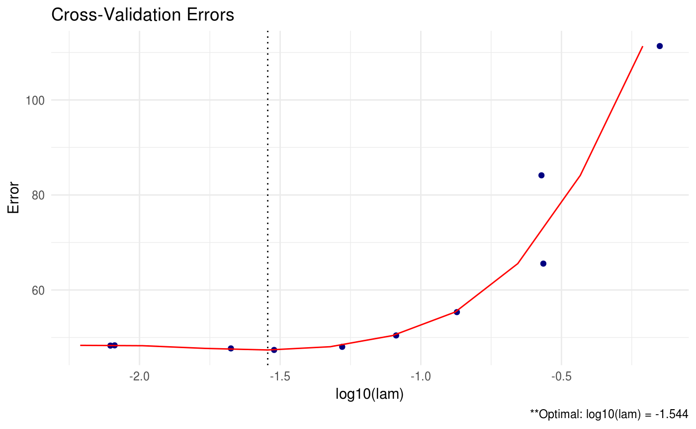
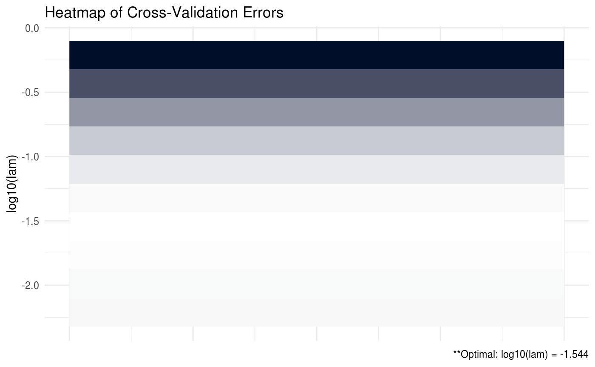

Overview
CVglasso is an R package that estimates a lasso-penalized precision matrix via block-wise coordinate descent – also known as the graphical lasso (glasso) algorithm. This package is a simple wrapper around the popular glasso package and extends and enhances its capabilities. These enhancements include built-in cross validation and visualizations.

A (possibly incomplete) list of functions contained in the package can be found below:
CVglasso()computes the estimated precision matrixplot.CVglasso()produces a heat map or line graph for cross validation errors
Installation
# The easiest way to install is from CRAN
install.packages("CVglasso")
# You can also install the development version from GitHub:
# install.packages("devtools")
devtools::install_github("MGallow/CVglasso")If there are any issues/bugs, please let me know: github. You can also contact me via my website. Pull requests are welcome!
Usage
library(CVglasso)
set.seed(123)
# generate data from a sparse oracle precision matrix
# we will try to estimate this matrix from the data
# first compute the oracle covariance matrix
S = matrix(0.7, nrow = 5, ncol = 5)
for (i in 1:5){
for (j in 1:5){
S[i, j] = S[i, j]^abs(i - j)
}
}
# print oracle precision matrix (shrinkage might be useful)
(Omega = round(qr.solve(S), 3))## [,1] [,2] [,3] [,4] [,5]
## [1,] 1.961 -1.373 0.000 0.000 0.000
## [2,] -1.373 2.922 -1.373 0.000 0.000
## [3,] 0.000 -1.373 2.922 -1.373 0.000
## [4,] 0.000 0.000 -1.373 2.922 -1.373
## [5,] 0.000 0.000 0.000 -1.373 1.961# generate 100 x 5 matrix with rows drawn from iid N_p(0, S)
set.seed(123)
Z = matrix(rnorm(100*5), nrow = 100, ncol = 5)
out = eigen(S, symmetric = TRUE)
S.sqrt = out$vectors %*% diag(out$values^0.5) %*% t(out$vectors)
X = Z %*% S.sqrt
# calculate sample covariance
sample = (nrow(X) - 1)/nrow(X)*cov(X)
# print sample precision matrix (perhaps a bad estimate)
round(qr.solve(cov(X)), 5)## [,1] [,2] [,3] [,4] [,5]
## [1,] 2.30646 -1.53483 0.21884 -0.08521 0.24066
## [2,] -1.53483 3.24286 -1.66346 -0.14134 0.18760
## [3,] 0.21884 -1.66346 3.16698 -1.23906 -0.10906
## [4,] -0.08521 -0.14134 -1.23906 2.74022 -1.35853
## [5,] 0.24066 0.18760 -0.10906 -1.35853 2.03323##
##
## Call: CVglasso(S = sample, lam = 0.5)
##
## Iterations:
## [1] 3
##
## Tuning parameter:
## log10(lam) lam
## [1,] -0.301 0.5
##
## Log-likelihood: -10.44936
##
## Omega:
## [,1] [,2] [,3] [,4] [,5]
## [1,] 1.34080 -0.00973 0.00000 0.00000 0.00000
## [2,] -0.00973 1.19263 -0.09615 0.00000 0.00000
## [3,] 0.00000 -0.09615 1.21895 -0.11424 0.00000
## [4,] 0.00000 0.00000 -0.11424 1.06968 -0.13534
## [5,] 0.00000 0.00000 0.00000 -0.13534 1.12473##
##
## Call: CVglasso(X = X, trace = "none")
##
## Iterations:
## [1] 3
##
## Tuning parameter:
## log10(lam) lam
## [1,] -1.544 0.029
##
## Log-likelihood: -110.16675
##
## Omega:
## [,1] [,2] [,3] [,4] [,5]
## [1,] 2.13225 -1.24667 0.00000 0.00000 0.18710
## [2,] -1.24669 2.75120 -1.29907 -0.07345 0.00000
## [3,] 0.00000 -1.29915 2.81735 -1.15679 -0.00114
## [4,] 0.00000 -0.07339 -1.15673 2.46461 -1.17086
## [5,] 0.18707 0.00000 -0.00116 -1.17087 1.86326
